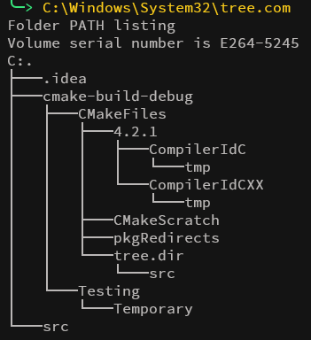
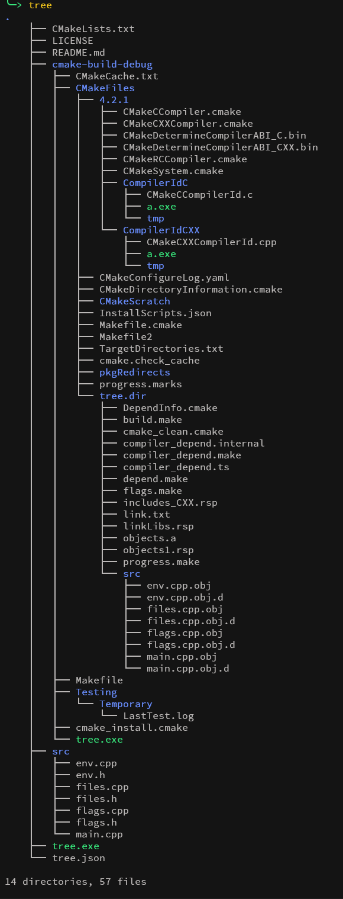

If you're anything like me, you only use Windows for the few programs that don't have good Linux alternatives. One of the things I hate most about it is the built-in tree command. It's slow, it's ugly, and it barely does anything.
Those of us from the Unix side already know there's something better. The tree command on Linux is faster, has far more features, and looks better.
The Windows version has, quite literally, three flags and two options:
Syntax:
tree [<drive>:][<path>] [/f] [/a]
Parameters:
| Parameter |
Description |
<drive>: |
Specifies the drive containing the disk for which you want the directory tree. |
<path> |
Specifies the directory to display the structure for. |
/f |
Displays the names of the files in each directory. |
/a |
Uses text characters instead of graphic lines for subdirectory links. |
/? |
Displays help at the command prompt. |
The Linux version, meanwhile, has dozens of flags for shaping the output however you like, down to color-coding by file type and size.
So I wrote my own tree for Windows. It's also just called tree, and you can install it with Scoop:
scoop bucket add tree https://github.com/jeebuscrossaint/tree
scoop update
scoop install tree
It matches the Linux version flag for flag, except for the HTML output options. I didn't see a need for those on Windows, and I doubt many people use them on Linux either.
Here's everything tree --help lists:
Usage:
tree [options] [directory...]
Options:
| Flag |
Description |
--help |
Outputs a verbose usage listing. |
--version |
Outputs the version of tree. |
-a |
All files are printed (including hidden files). |
-d |
List directories only. |
-f |
Prints the full path prefix for each file. |
-i |
Makes tree not print the indentation lines. |
-l |
Follows symbolic links if they point to directories. |
-x |
Stay on the current file-system only. |
-P pattern |
List only those files that match the wild-card pattern. |
-I pattern |
Do not list those files that match the wild-card pattern. |
--noreport |
Omits printing of the file and directory report. |
-p |
Print the file type and permissions for each file. |
-s |
Print the size of each file in bytes. |
-h |
Print the size in human readable format. |
-u |
Print the username or UID. |
-g |
Print the group name or GID. |
-D |
Print the date of last modification. |
--inodes |
Prints the inode number. |
--device |
Prints the device number. |
-F |
Append indicators for file types (/, =, *, |). |
-q |
Print non-printable characters as question marks. |
-N |
Print non-printable characters as is. |
-v |
Sort the output by version. |
-r |
Sort the output in reverse alphabetic order. |
-t |
Sort the output by last modification time. |
--dirsfirst |
List directories before files. |
-n |
Turn colorization off always. |
-C |
Turn colorization on always. |
-A |
Turn on ANSI line graphics. |
-S |
Turn on ASCII line graphics. |
-L level |
Max display depth of the directory tree. |
--filelimit # |
Do not descend directories with more than # entries. |
Side by side
Here's the difference in practice. First, the built-in command:
Default Windows Tree:

And here's mine, on the same directory:
This tree (Linux-style):

What you get over the built-in one:
- A clearer hierarchy, with proper indentation and line drawing
- Color, so directories, files, and file types are easy to tell apart
- Optional detail on demand: sizes, permissions, owners, and modification dates
The built-in command works, technically. This one is the tree you already know from Linux.